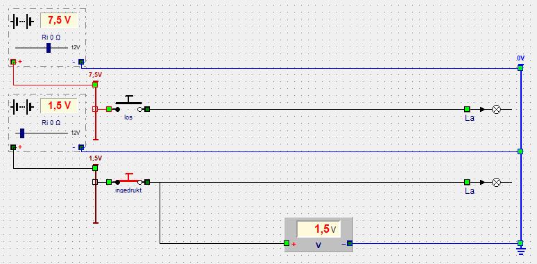

Parcours › Leçon 10 sur 42 · Niveau : Base

Dans les leçons précédentes, l’alimentation venait de façon invisible de l’arrière-plan. Ici, vous la rendez visible avec un circuit d’alimentation :
La source du haut est réglée sur 5 V, celle du bas sur 1,5 V. Chaque source alimente son propre rail + ; elles partagent le rail −.
Le voltmètre a sa borne + sur la sortie du bouton-poussoir du bas et sa borne − sur le rail −. Il mesure la tension par rapport à la masse : 1,5 V. Pourtant la lampe rougeoie à peine. C’est une lampe de 5 V : sous 1,5 V, elle ne reçoit que 9 % de sa puissance (P = U × U / R). Ce n’est qu’à partir d’environ 2,5 V (un quart de sa puissance) qu’elle s’allume vraiment. Une entrée logique a aussi besoin d’assez de tension : ce n’est qu’à partir d’environ 2 V que le signal compte comme 1.
Cherchez avec le curseur la tension la plus basse à laquelle la lampe du bas s’allume encore. Que se passe-t-il si vous supprimez le fil entre la borne − d’une source et le rail − ?
À partir d’environ 2,5 V, la lampe s’allume (un quart de sa puissance), à 5 V elle brille pleinement ; à 1,5 V elle rougeoie à peine. Sans le fil vers le rail −, le circuit n’est pas fermé : le rail + de cette source tombe à 0 V et devient gris, et le bouton-poussoir relié à ce rail ne fonctionne plus. Aucun courant ne peut circuler sans chemin de retour vers la source.